vignettes/differential_analysis.Rmd
differential_analysis.RmdMost of the pipeline and visualizations presented herein were adapted from Nowicka et al. (2017)’s “CyTOF workflow: differential discovery in high-throughput high-dimensional cytometry datasets”. For the complete workflow, go here.
# load required packages
suppressPackageStartupMessages({
library(CATALYST)
library(SummarizedExperiment)
})PBMC_fs:flowSet holding PBMCs samples from 4 patients, each containing between 500 and 1000 cells. For each sample, the expression of 10 cell surface and 14 signaling markers was measured before (REF) and upon BCR/FcR-XL stimulation (BCRXL) with B cell receptor/Fc receptor crosslinking for 30’, resulting in a total of 8 samples.PBMC_panel:fcs_colname column), and its targeted protein marker (antigen column).PBMC_md:file_name, sample_id, condition, and patient_id.## A flowSet with 8 experiments.
##
## column names:
## CD3(110:114)Dd CD45(In115)Dd pNFkB(Nd142)Dd pp38(Nd144)Dd CD4(Nd145)Dd CD20(Sm147)Dd CD33(Nd148)Dd pStat5(Nd150)Dd CD123(Eu151)Dd pAkt(Sm152)Dd pStat1(Eu153)Dd pSHP2(Sm154)Dd pZap70(Gd156)Dd pStat3(Gd158)Dd CD14(Gd160)Dd pSlp76(Dy164)Dd pBtk(Er166)Dd pPlcg2(Er167)Dd pErk(Er168)Dd pLat(Er170)Dd IgM(Yb171)Dd pS6(Yb172)Dd HLA-DR(Yb174)Dd CD7(Yb176)Dd## fcs_colname antigen
## 1 CD3(110:114)Dd CD3
## 2 CD45(In115)Dd CD45
## 3 pNFkB(Nd142)Dd pNFkB
## 4 pp38(Nd144)Dd pp38
## 5 CD4(Nd145)Dd CD4
## 6 CD20(Sm147)Dd CD20## file_name sample_id condition patient_id
## 1 PBMC_patient1_BCRXL.fcs BCRXL1 BCRXL Patient1
## 2 PBMC_patient1_Ref.fcs Ref1 Ref Patient1
## 3 PBMC_patient2_BCRXL.fcs BCRXL2 BCRXL Patient2
## 4 PBMC_patient2_Ref.fcs Ref2 Ref Patient2
## 5 PBMC_patient3_BCRXL.fcs BCRXL3 BCRXL Patient3
## 6 PBMC_patient3_Ref.fcs Ref3 Ref Patient3The code snippet below demonstrates how to construct a flowSet from a set of FCS files. However, we also give the option to directly specify the path to a set of FCS files (see next section).
# download exemplary set of FCS files
url <- "http://imlspenticton.uzh.ch/robinson_lab/cytofWorkflow"
fcs_zip <- "PBMC8_fcs_files.zip"
download.file(paste0(url, "/", fcs_zip), destfile = fcs_zip, mode = "wb")
unzip(fcs_zip)
# read in FCS files as flowSet
library(flowCore)
fcs_files <- list.files(pattern = ".fcs$")
fs <- read.flowSet(fcs_files, transformation = FALSE, truncate_max_range = FALSE)daFrame classData used and returned throughout differential analysis are held in objects of the daFrame class. Its constructor requires the following inputs:
x: a flowSet holding the raw measurement data, or a character string that specifies a path to a set of FCS files.panel: a 2 column data.frame that contains for each marker of interest i) its column name in the raw input data, and ii) its targeted protein marker.md: a data.frame with columns describing the experimental design.Optionally, cols_to_use will specify which columns (channels) to keep from the input data. Here, we keep all measurement parameters (default value cols_to_use = NULL).
## class: daFrame
## dim: 5428 24
## metadata(2): experiment_info n_cells
## assays(1): exprs
## rownames: NULL
## rowData names(3): sample_id condition patient_id
## colnames(24): CD3 CD45 ... HLA_DR CD7
## colData names(3): channel_name marker_name marker_classWe provide flexibility in the way the panel and metadata table can be set up. Specifically, column names are allowed to differ from the example above, and multiple factors (patient ID, conditions, batch etc.) can be specified. Arguments panel_cols and md_cols should then be used to specify which columns hold the required information. An example is given below:
# alter panel column names
panel2 <- PBMC_panel
colnames(panel2) <- c("channel_name", "marker")
# alter metadata column names & add 2nd condition
md2 <- PBMC_md
colnames(md2) <- c("file", "sampleID", "cond1", "patientID")
md2$cond2 <- rep(c("A", "B"), 4)
# construct daFrame
daFrame(PBMC_fs, panel2, md2,
panel_cols = list(channel = "channel_name", antigen = "marker"),
md_cols = list(file = "file", id = "sampleID",
factors = c("cond1", "cond2", "patientID")))Note that, independent of the input panel and metadata tables, the constructor will fix the names of mandatory slots for latter data accession (sample_id in the rowData, channel_name and marker_name in the colData). The md table will be stored under experiment_info inside the metadata.
plotCounts: Number of cells measured per sampleThe number of cells measured per sample may be plotted with plotCounts, or directly accessed via n_cells(). This plot should be used as a guide together with other readouts to identify samples where not enough cells were assayed.
## BCRXL1 Ref1 BCRXL2 Ref2 BCRXL3 Ref3 BCRXL4 Ref4
## 528 881 665 438 563 660 934 759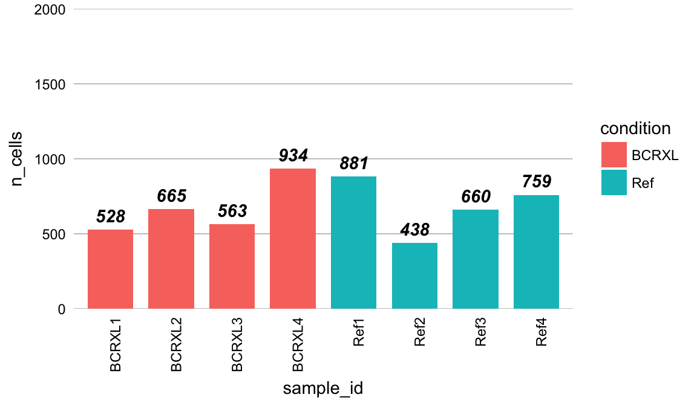
plotMDS: Multi-dimensional scaling plotA multi-dimensional scaling (MDS) plot on median expresion values may be rendered with plotMDS. Such a plot will give a sense of similarities between samples in an unsupervised way and of key difference in expression before conducting any formal testing. In our example, we can see a clear separation between reference (REF) and stimulation condition (BCRXL).
## Warning: package 'bindrcpp' was built under R version 3.4.4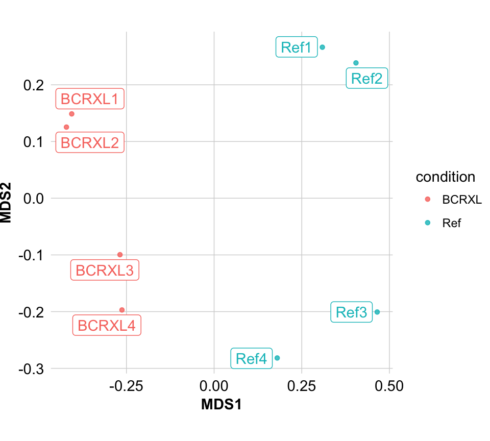
plotExprHeatmap: Heatmap of (scaled) median marker expressionsplotExprHeatmap will show a heatmap on median marker intensities with hierarchically clustered columns (samples) and rows (markers). This plot should give an idea of which markers will drive sample clustering, and how similiar samples are in their expression profile.
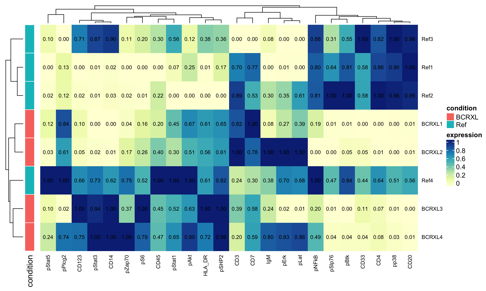
cluster: FlowSOM clustering & ConsensusClusterPlus metaclusteringCATALYST provides a simple wrapper to perform high resolution FlowSOM clustering and lower resolution ConsensusClusterPlus metaclustering. By default, the data will be initially clustered into xdim = 10 x ydim = 10 = 100 groups. Secondly, the function will metacluster populations into 2 through maxK (default 20) clusters. To make analyses reproducible, the random seed may be set via seed.
# specify markers to use for clustering
lineage_markers <- c("CD3", "CD45", "CD4", "CD20",
"CD33", "CD123", "CD14", "IgM", "HLA_DR", "CD7")
daF <- cluster(daF, cols_to_use = lineage_markers,
xdim = 10, ydim = 10, maxK = 20, verbose = FALSE, seed = 1) Let K = xdim x ydim be the number of FlowSOM clusters. cluster will add information to the following slots of the input daFrame:
rowData:
cluster_id: cluster ID as inferred by FlowSOM. One of 1, …, K.colData:
marker_class: factor "type" or "state". Specifyies whether a marker has been used for clustering or not, respectively.metadata:
SOM_codes: a table with dimensions K x (# type markers). Contains the SOM codes.cluster_codes: a table with dimensions K x (maxK + 1). Contains the cluster codes for all metaclusterings.delta_area: a ggplot object (see below for details).The delta area represents the amount of extra cluster stability gained when clustering into k groups as compared to k-1 groups. It can be expected that high stability of clusters can be reached when clustering into the number of groups that best fits the data. The “natural” number of clusters present in the data should thus corresponds to the value of k where there is no longer a considerable increase in stability (pleateau onset). For more details, the user can refer to the original description of the consensus clustering method (Monti et al. 2003).
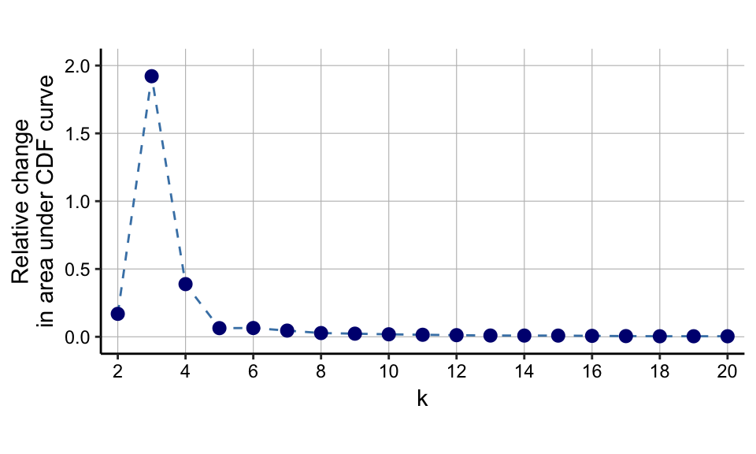
mergeClusters: Manual cluster mergingProvided with a 2 column data.frame containing old_cluster and new_cluster IDs, mergeClusters allows for manual cluster merging of any clustering available within the input daFrame (i.e. the xdim x ydim FlowSOM clusters, and any of the 2-maxK ConsensusClusterPlus metaclusters). For latter accession (visualization, differential testing), the function will assign a unique ID (specified with id) to each merging, and add a column to the cluster_codes inside the metadata slot of the input daFrame.
## # A tibble: 6 x 2
## old_cluster new_cluster
## <dbl> <chr>
## 1 1 B-cells IgM+
## 2 2 surface-
## 3 3 NK cells
## 4 4 CD8 T-cells
## 5 5 B-cells IgM-
## 6 6 monocytes## 100 2 3 4 5 6 7 8 9 10 11 12 13 14 15 16 17 18 19 20 merging1
## 1 1 1 1 1 1 1 1 1 1 1 1 1 1 1 1 1 1 1 1 1 B-cells IgM+
## 2 2 1 1 1 1 1 1 1 1 1 1 1 1 1 1 1 1 1 1 1 B-cells IgM+
## 3 3 1 1 1 1 1 1 1 1 1 1 1 1 1 1 1 1 1 1 1 B-cells IgM+
## 4 4 1 1 1 1 1 2 2 2 2 2 2 2 2 2 2 2 2 2 2 surface-
## 5 5 1 1 1 1 1 2 2 2 2 2 2 2 2 2 2 2 2 2 2 surface-
## 6 6 1 1 1 1 1 2 2 2 2 2 2 2 2 3 3 3 3 3 3 NK cellsplotClusterHeatmap: Heatmap of (meta)clustering resultsClusterings and metaclusters maybe be viewing with the plotClusterHeatmap. In its 1st panel, the function will display median (arcsinh-transformed and optionally scaled) cell-type marker expressions (across all samples). Depending on argument hm2, the 2nd panel will vary as follows:
"abundances": cluster frequencies by sample;"state_markers": median cell state marker expressions across clusters (analogous to the left-hand side heatmap);Argument scale (default TRUE) specifies whether scaled values should be plotted. These correspond to arcsinh-transformed expression values scaled between 0 and 1 using low (1%) and high (99%) percentiles as boundaries. Note that, in any case, hierarchical clustering is performed on the unscaled data.
While it is only used here for visualization, this additional transformation of the arcsinh-transformed data can sometimes give a better representation of relative differences in marker expression between cell populations.
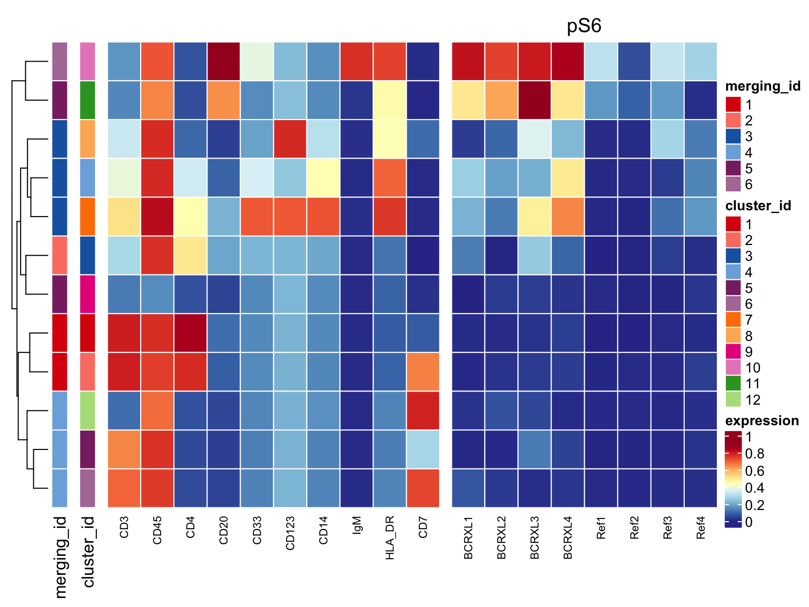
# population frequencies by sample as 2nd heatmap
plotClusterHeatmap(daF, hm2 = "abundances",
draw_freqs = TRUE, cluster_anno = FALSE)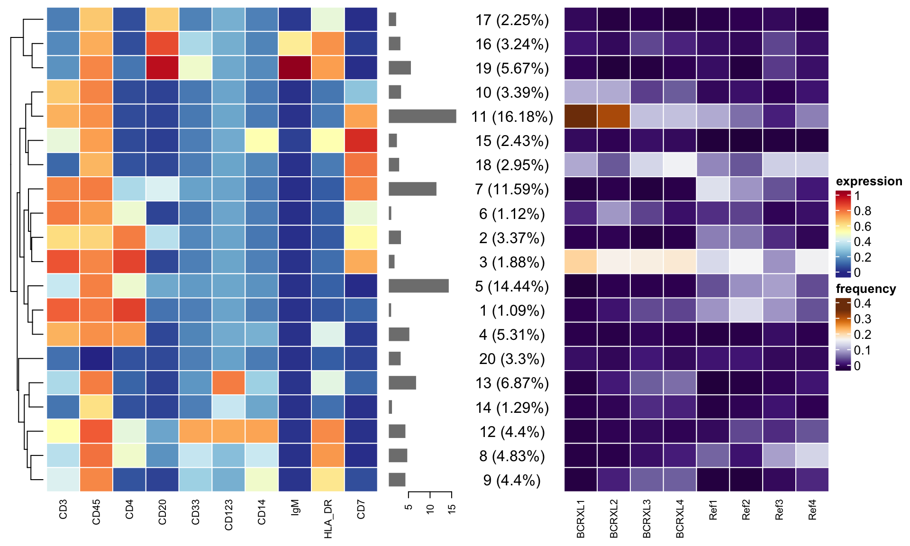
plotAbundances: Relative population abundancesRelative population abundances for any clustering of interest can be plotted with plotAbundances. Argument by will specify whether to plot proportions for each sample or cluster.
If by = "sample_id", the function displays each sample’s cell type composition, and the size of a given stripe reflects the proportion of the corresponding cell type the given sample. Argument group then specifies the facetting. If by = "cluster_id", argument group then specifies the grouping and color coding.
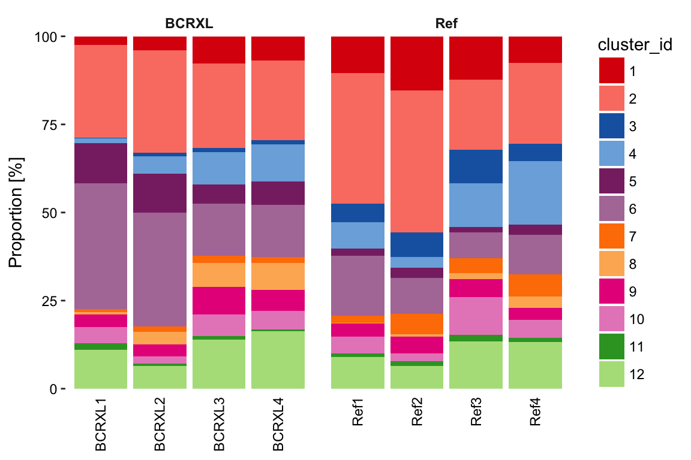
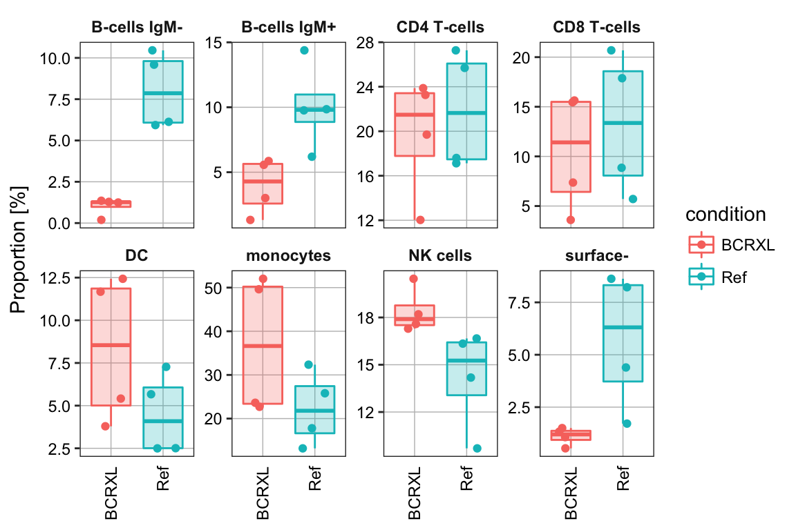
tSNE
Dimensionality reduction through t-SNE may be run via tSNE. Here, the subset of markers to use is specified with cols_to_use, and the number of cells to dowsample to per sample is given by n. Again, the random seed may be set via seed for reproducibility.
plotSNE: t-SNE visualizationplotSNE is a flexbile wrapper to plot the t-SNE colored by clustering or marker expression. Furthermore, the data may be split by condition, sample ID, or any other factor available in the daFrame’s rowData.
# color by pS6 expression and split by condition
plotSNE(daF, color_by = "pS6", facet = "condition")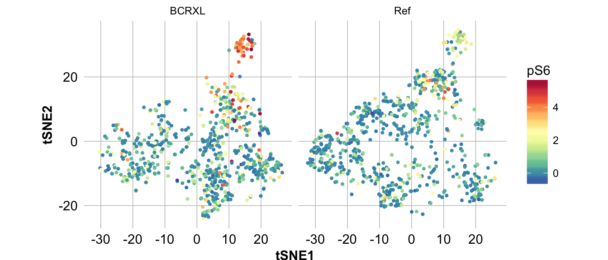
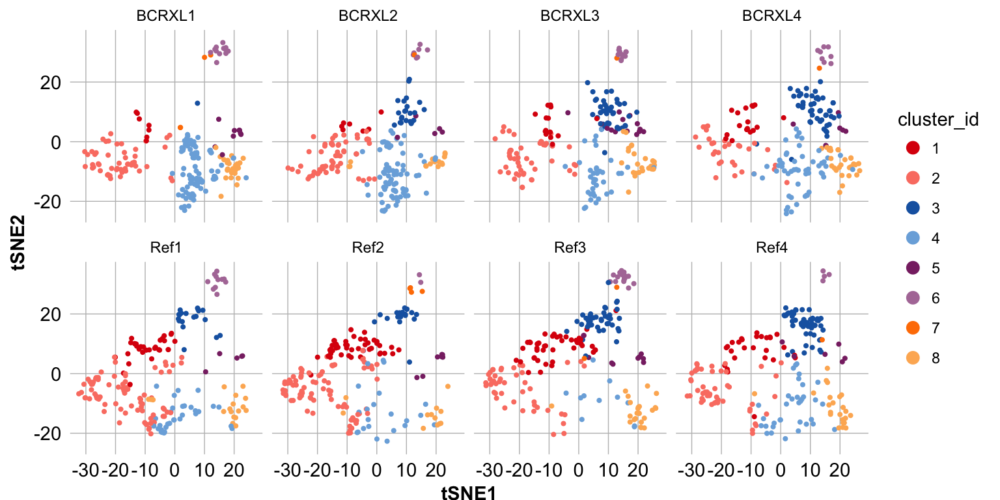
CATALYST has been designed to be compatible with the diffcyt package (Weber 2018), which implements statistical methods for differential discovery in high-dimensional cytometry (including flow cytometry, mass cytometry or CyTOF, and oligonucleotide-tagged cytometry) using high-resolution clustering and moderated tests. The input to the diffcyt pipeline can either be raw data, or a daFrame object. We give an exmaple of the latter below.
Please refer to the diffcyt vignette and R documentation (??diffcyt) for more detailed information.
library(diffcyt)
# create design & constrast matrix
design <- createDesignMatrix(PBMC_md, cols_design=3)
contrast <- createContrast(c(0, 1))
# test for
# - differential abundance (DA) of clusters
# - differential states (DS) within clusters
res_DA <- diffcyt(daF, design = design, contrast = contrast,
analysis_type = "DA", method_DA = "diffcyt-DA-edgeR")
res_DS <- diffcyt(daF, design = design, contrast = contrast,
analysis_type = "DS", method_DS = "diffcyt-DS-limma", plot = FALSE)plotDiffHeatmap: Heatmap of differential testing resultsDifferential testing results returned by diffcyt can be displayed with the plotDiffHeatmap function.
For differential abundance (DA) tests, plotDiffHeatmap will display
For differential state (DS) tests, plotDiffHeatmap will display
Clusters (DA) and cluster-marker combinations (DS), respectively, will be marked as significant if their adjusted p-value falls below the threshold value specified with th (default 0.1), and will be ordered by significance if order = TRUE (the default). The number of top findings to display can be specified with top_n (default 20).
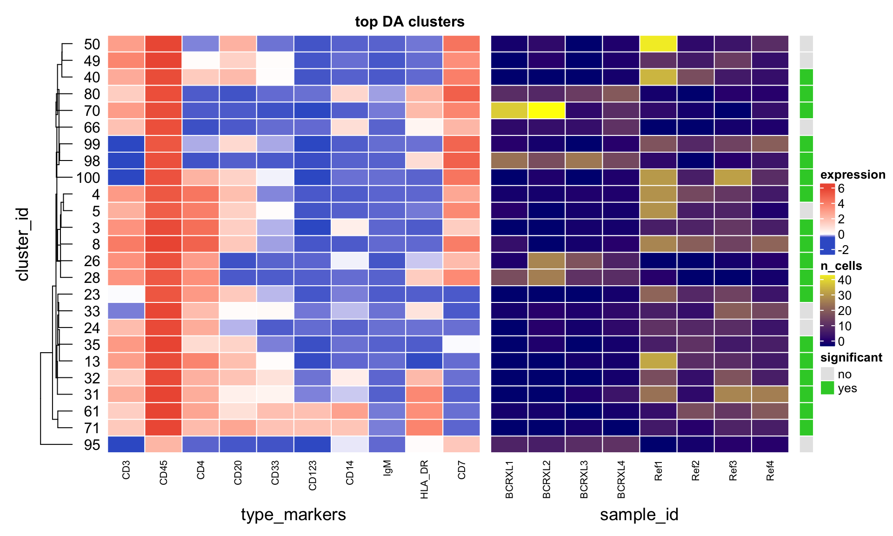
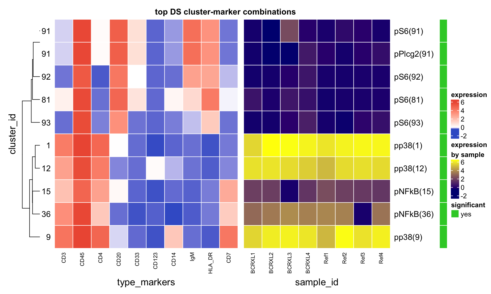
## R version 3.4.1 (2017-06-30)
## Platform: x86_64-apple-darwin15.6.0 (64-bit)
## Running under: macOS High Sierra 10.13.4
##
## Matrix products: default
## BLAS: /Library/Frameworks/R.framework/Versions/3.4/Resources/lib/libRblas.0.dylib
## LAPACK: /Library/Frameworks/R.framework/Versions/3.4/Resources/lib/libRlapack.dylib
##
## locale:
## [1] en_US.UTF-8/en_US.UTF-8/en_US.UTF-8/C/en_US.UTF-8/en_US.UTF-8
##
## attached base packages:
## [1] parallel stats4 stats graphics grDevices utils datasets
## [8] methods base
##
## other attached packages:
## [1] diffcyt_0.99.15 bindrcpp_0.2.2
## [3] SummarizedExperiment_1.8.1 DelayedArray_0.4.1
## [5] matrixStats_0.53.1 Biobase_2.38.0
## [7] GenomicRanges_1.30.3 GenomeInfoDb_1.14.0
## [9] IRanges_2.12.0 S4Vectors_0.16.0
## [11] BiocGenerics_0.24.0 CATALYST_1.5.2
## [13] BiocStyle_2.6.1
##
## loaded via a namespace (and not attached):
## [1] minqa_1.2.4 TH.data_1.0-8
## [3] Rtsne_0.13 colorspace_1.3-2
## [5] rjson_0.2.18 rio_0.5.10
## [7] rprojroot_1.3-2 circlize_0.4.3
## [9] corpcor_1.6.9 XVector_0.18.0
## [11] GlobalOptions_0.0.13 fs_1.2.2
## [13] rstudioapi_0.7 roxygen2_6.0.1
## [15] ggrepel_0.8.0 DT_0.4
## [17] mvtnorm_1.0-7 xml2_1.2.0
## [19] codetools_0.2-15 splines_3.4.1
## [21] robustbase_0.93-0 knitr_1.20
## [23] jsonlite_1.5 nloptr_1.0.4
## [25] cluster_2.0.7-1 shinydashboard_0.7.0
## [27] graph_1.56.0 shiny_1.0.5
## [29] rrcov_1.4-3 compiler_3.4.1
## [31] httr_1.3.1 drc_3.0-1
## [33] backports_1.1.2 assertthat_0.2.0
## [35] Matrix_1.2-14 lazyeval_0.2.1
## [37] cli_1.0.0 limma_3.34.9
## [39] later_0.7.2 htmltools_0.3.6
## [41] tools_3.4.1 igraph_1.2.1
## [43] gtable_0.2.0 glue_1.2.0
## [45] GenomeInfoDbData_1.0.0 reshape2_1.4.3
## [47] dplyr_0.7.4 Rcpp_0.12.16
## [49] carData_3.0-1 cellranger_1.1.0
## [51] pkgdown_1.0.0 nlme_3.1-137
## [53] xfun_0.1 stringr_1.3.1
## [55] lme4_1.1-17 openxlsx_4.0.17
## [57] mime_0.5 gtools_3.5.0
## [59] XML_3.98-1.11 edgeR_3.20.9
## [61] DEoptimR_1.0-8 zlibbioc_1.24.0
## [63] MASS_7.3-50 zoo_1.8-1
## [65] scales_0.5.0 shinyBS_0.61
## [67] promises_1.0.1 sandwich_2.4-0
## [69] RColorBrewer_1.1-2 ComplexHeatmap_1.17.1
## [71] yaml_2.1.19 curl_3.2
## [73] memoise_1.1.0 gridExtra_2.3
## [75] ggplot2_2.2.1 stringi_1.2.2
## [77] desc_1.2.0 pcaPP_1.9-73
## [79] plotrix_3.7-1 flowCore_1.44.2
## [81] shape_1.4.4 rlang_0.2.0
## [83] pkgconfig_2.0.1 commonmark_1.5
## [85] bitops_1.0-6 evaluate_0.10.1
## [87] lattice_0.20-35 purrr_0.2.4
## [89] bindr_0.1.1 labeling_0.3
## [91] htmlwidgets_1.2 plyr_1.8.4
## [93] magrittr_1.5 bookdown_0.7
## [95] R6_2.2.2 nnls_1.4
## [97] multcomp_1.4-8 pillar_1.2.2
## [99] haven_1.1.1 foreign_0.8-70
## [101] survival_2.42-3 abind_1.4-5
## [103] RCurl_1.95-4.10 FlowSOM_1.10.0
## [105] tibble_1.4.2 tsne_0.1-3
## [107] crayon_1.3.4 car_3.0-0
## [109] utf8_1.1.3 plotly_4.7.1
## [111] rmarkdown_1.9 GetoptLong_0.1.6
## [113] locfit_1.5-9.1 grid_3.4.1
## [115] readxl_1.1.0 data.table_1.10.4-3
## [117] ConsensusClusterPlus_1.42.0 forcats_0.3.0
## [119] digest_0.6.15 xtable_1.8-2
## [121] httpuv_1.4.3 tidyr_0.8.0
## [123] munsell_0.4.3 viridisLite_0.3.0
## [125] shinyjs_1.0Bodenmiller, Bernd, Eli R Zunder, Rachel Finck, Tiffany J Chen, Erica S Savig, Robert V Bruggner, Erin F Simonds, et al. 2012. “Multiplexed Mass Cytometry Profiling of Cellular States Perturbed by Small-Molecule Regulators.” Nature Biotechnology 30 (9):858–67. https://doi.org/10.1038/nbt.2317.
Bruggner, Robert V, Bernd Bodenmiller, David L Dill, Robert J Tibshirani, and Garry P Nolan. 2014. “Automated Identification of Stratifying Signatures in Cellular Subpopulations.” Proceedings of the National Academy of Sciences of the United States of America 111 (26). National Academy of Sciences:E2770–E2777. https://doi.org/10.1073/pnas.1408792111.
Monti, Stefano, Pablo Tamayo, Jill Mesirov, and Todd Golub. 2003. “Consensus Clustering: A Resampling-Based Method for Class Discovery and Visualization of Gene Expression Microarray Data.” Machine Learning 52 (1):91–118. https://doi.org/10.1023/A:1023949509487.
Nowicka, M, C Krieg, LM Weber, FJ Hartmann, S Guglietta, B Becher, MP Levesque, and MD Robinson. 2017. “CyTOF Workflow: Differential Discovery in High-Throughput High-Dimensional Cytometry Datasets [Version 2; Referees: 2 Approved].” F1000Research 6 (748). https://doi.org/10.12688/f1000research.11622.2.
Weber, LM. 2018. “Diffcyt: Differential Discovery in High-Dimensional Cytometry via High-Resolution Clustering.” R Package Version 1.0.0. https://github.com/lmweber/diffcyt.